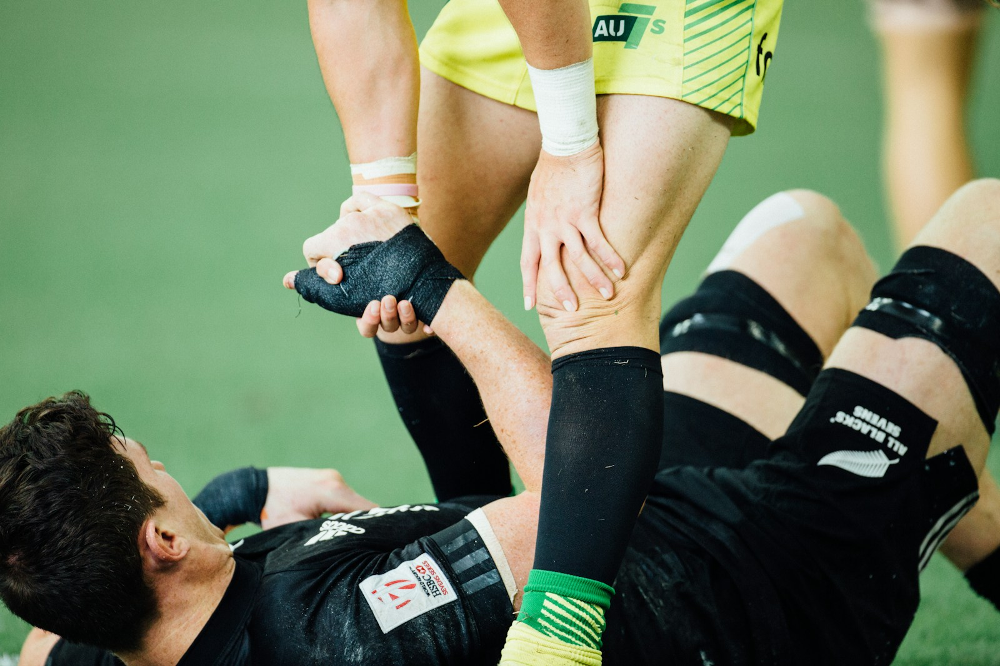
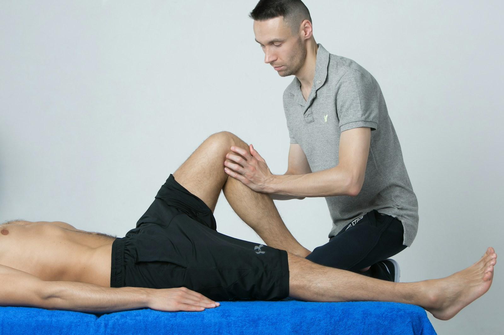
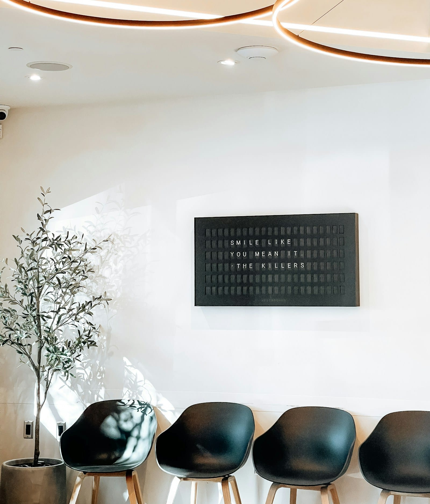

スポーツのけが
院長は、部活と社会人チームに8年帯同しました。
試合中のけがの応急処置から、練習に戻るまでの段階的な運動まで、現場で見てきた順番で進めます。次の試合の日程を教えてください。
8年のトレーナー帯同（高校サッカー部・社会人ラグビー）
架空の整骨院のデザイン見本です（制作：プラチナ企画）
そらの台駅 北口から徒歩 2 分
平日は夜20時まで、土日も受付しています。捻挫・打撲・肉ばなれなどのけがは、健康保険で施術できます。
LINE ID @sorano-sekkotsu 予約優先・当日のご予約もどうぞ

「いつ・何をして痛めたか」で、健康保険が使えるかどうかが変わります。迷ったら、そのまま来院時にお話しください。
事故の直後は痛みが出ないこともあります。整形外科の受診とあわせて、施術の頻度を相談しましょう。
何年も続く肩こりは保険の対象外です。猫背矯正など自費のメニューでご案内します。
原因がはっきりした急な痛みは保険の対象になることがあります。慢性的な腰の重さは自費です。
腫れ・熱の有無を確かめ、骨折が疑われる場合は先に整形外科をご紹介します。
痛みが落ち着いてからの、競技に戻るための運動とテーピングまで見ます。
保険が使えるかは、施術者が状態を確認したうえで判断します。

スポーツのけが
試合中のけがの応急処置から、練習に戻るまでの段階的な運動まで、現場で見てきた順番で進めます。次の試合の日程を教えてください。
8年のトレーナー帯同（高校サッカー部・社会人ラグビー）
夜と週末
仕事帰りや部活のあとに寄れる時間です。休みは水曜と祝日だけ。
20:00平日の最終受付
予約優先
LINEなら夜中でも予約を入れられます。予約なしでも、空いている枠でご案内します。
30分ごとの予約枠
整骨院で健康保険が使えるのは、原因がはっきりした急な（または亜急性の）外傷だけです。慢性の肩こりや腰痛は保険外になります。
| 項目 | 健康保険 | 自費（保険外） |
|---|---|---|
| 対象 | 急性・亜急性の外傷 骨折・脱臼・打撲・捻挫・挫傷（肉ばなれ）骨折・脱臼は、応急手当を除き医師の同意が必要です |
慢性的な肩こり・腰痛、姿勢のくせ、疲れの残る体のケア |
| たとえば | 階段で足首をひねった／サッカーで太ももを痛めた | 何年も続く肩こり／デスクワークのあとの腰の重さ |
| お支払い | 1〜3割の負担3割負担の初回でおおむね1,500円前後（部位の数で変わります・見本用の目安） | 全額自己負担下の「自費メニューと料金」をご覧ください |
| 持ち物 | マイナ保険証（または資格確認書） | なし |
自賠責保険の対象となる場合、窓口でのお支払いはかかりません。先に保険会社へ「整骨院に通う」と伝えてください。整形外科での診断もあわせて受けていただきます。
LINEか電話で。けがをした日時と場所を一言添えてください。
マイナ保険証をお出しください。問診票は5分ほどで書けます。
痛む場所と動きを確かめ、保険か自費かをここでお伝えします。
手技・電気・テーピングなど。強さは途中でも変えられます。
家でのケアと、次に来るタイミングを決めて終わりです。
院長 柔道整復師（国家資格）
けがをした選手が一番知りたいのは「いつ戻れるか」です。今日できること、来週できること、試合の日にできること。そこまで一緒に決めてから帰っていただきます。
森 さくら柔道整復師／EMS・骨盤調整を担当
大野 ひかり受付／予約と保険の手続き
※院名・人物名・経歴はすべて架空です。
| 時間 | 月 | 火 | 水 | 木 | 金 | 土 | 日 |
|---|---|---|---|---|---|---|---|
| 9:00–12:30 | ○ | ○ | × | ○ | ○ | ○ | ○ |
| 15:00–20:00 | ○ | ○ | × | ○ | ○ | ▲ | × |
▲ 土曜は 9:00–17:00 の通し（昼休みなし）。日曜は 9:00–14:00 の通し。休み：水曜・祝日。
予約優先です。予約のない方も、空いている枠でご案内します。

LINEは24時間受け付けています。電話は受付時間内にどうぞ。